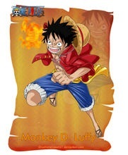
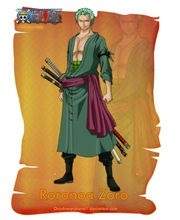
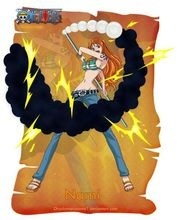
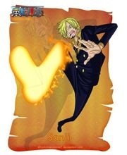
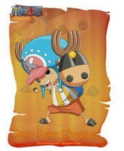
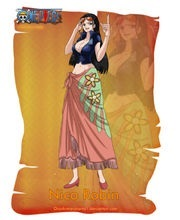
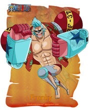
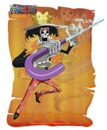
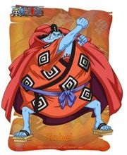
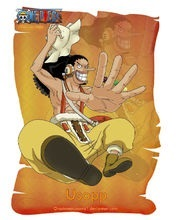

角色介绍
|  | “草帽”蒙奇·D·路飞（モンキーD·ルフィ/Monkey D. Luffy） 初次登场：漫画第1话 年龄：17岁→19岁 生日：5月5日 血型：F型 身高：172cm→174cm 故乡：东海·风车村 身份：草帽一伙船长 喜欢的食物：所有美食，首先是肉。 爱好：喜欢探险，感兴趣于新奇怪异的事物 梦想：找到ONE PIECE，并成为海贼王。 恶魔果实：超人系橡胶果实 身世：父亲是革命军首领蒙奇·D·龙，爷爷是海军中将英雄卡普。 悬赏：3千万（可可亚西村事件）→1亿（阿拉巴斯坦事件）→3亿（司法岛事件）→4亿（顶上战争）→5亿（德雷斯罗萨篇）→15亿（蛋糕岛事件） |
|  | “海贼猎人”罗罗诺亚·索隆（ロロノア·ゾロ/Roronoa Zoro） [16] 初次登场：漫画第3话 年龄：19岁→21岁 生日：11月11日 血型：XF型 故乡：东海·霜月村 身份：东海海贼赏金猎人→草帽一伙战斗员 身高：178cm→181cm 喜欢的食物：白米，海兽的肉，适合下酒的食物 爱好：睡觉、修炼、喝酒。 缺点：路痴 梦想：世界第一大剑豪 悬赏：6千万（阿拉巴斯坦事件）→1亿2000万（司法岛事件）→3亿2000万（德雷斯罗萨篇） |
|  | “小贼猫”娜美（ナミ/Nami） [17] 初次登场：漫画第8话 年龄：18岁→20岁 生日：7月3日 血型：X型 身份：阿龙海贼团测量员→草帽一伙航海士 故乡：东海▪可可亚西村 特征：左臂有风车和橘子样的纹身（纪念阿健和养母贝尔梅尔），左手手腕戴着一个手镯（姐姐诺琪高在娜美出海前送给她的）。 身高：169cm→170cm 三围：B95▪W55▪H85 喜欢的食物：都不错，但最喜欢橘子 爱好：钱，橘子 特长：绘制地图，观测天气，偷东西 梦想：绘制出自己的世界地图、绘制全世界的航海图。 武器：三截式长棍→天候棒→完全版天候棒→魔法天候棒 悬赏：1600万（司法岛事件）→6600万（德雷斯罗萨篇） |
|  | “黑足”山治（サンジ/Sanji） [19] 初次登场：漫画第43话 年龄：19岁→21岁 生日：3月2日 血型：S型RH阴性 身份：海上餐厅巴拉蒂副料理长→草帽一伙厨师 故乡：北海 身高：177cm→180cm 喜欢的食物：辣味海鲜面，适合红茶的食物 爱好：下厨，抽烟，浪漫幻想 身世：文斯莫克一族三子 梦想：寻找传说中的奇迹之海－ALL BLUE（曾在恐怖三桅船上透露自己梦想过成为透明人并且为别人带来帮助，其实是为了偷窥女澡堂，但是吃了透明果实的阿布萨罗姆使他放弃了这个梦想。） 悬赏：7700万（司法岛事件）→1亿7700万（德雷斯罗萨篇）→3亿3000万（蛋糕岛事件） |
|  | “爱吃棉花糖的驯鹿”托尼托尼·乔巴（トニートニーチョッパー/Tony Tony Chopper） [20] 初次登场：漫画第134话 年龄：15岁→17岁 生日：12月24日 血型：X型 身份：磁鼓岛医生→草帽一伙船医 故乡：伟大航路▪磁鼓岛（冬岛、樱花之国） 身高：因身体变化而变化 喜欢的食物：棉花糖，巧克力，所有甜的食物 特长：医术 梦想：成为万能药（不管什么病都能治的医生） 恶魔果实：动物系▪人人果实 悬赏：50（司法岛事件）→100（德雷斯罗萨篇） |
|  | “恶魔之子”妮可·罗宾（ニコ·ロビン/Nico Robin） [21] 初次登场：漫画第114话 年龄：28岁→30岁 生日：2月6日 血型：S型 身份：奥哈拉岛考古学家→……→巴洛克工作社副社长Miss.AllSunday→草帽一伙考古学家 故乡：西海▪奥哈拉岛（已灭） 身高：188cm 三围：B99▪W59▪H89 喜欢的食物：三明治，不太甜的蛋糕，适合咖啡的食物 特长：考古 梦想：寻找真正的“历史正文”，并且在历史正文碑的指引下，到达伟大航道的尽头“拉夫德鲁”。 恶魔果实：超人系▪花花果实 悬赏：7900万（奥哈拉事件 [22] ）→8000万（司法岛事件）→1亿3000万（德雷斯罗萨篇） |
|  | “改造人”弗兰奇（フランキー/Franky） [23] 初次登场：漫画第329话 本名：卡迪·佛兰姆 年龄：34岁→36岁 生日：3月9日 血型：XF型 身份：汤姆工作室学徒→水之都“弗兰奇之家”老大→草帽一伙船工 故乡：南海 身高：225cm→240cm 喜欢的食物：汉堡包，炸薯条，搭配可乐的食物 特长：不光是修船技术高超，还懂建筑。除背后浑身上下都是武器（因为自己够不到后背）。 梦想：制造出梦想之船，在Sunny号完成后，想看到自己制造的船到达世界尽头而加入路飞一行。 悬赏：4400万（司法岛事件）→9400万（德雷斯罗萨篇） |
|  | “鼻歌”&“灵魂之王”布鲁克（ブルック/Brook） [24] 初次登场：漫画第442话 年龄：88岁→90岁【在人间时享年38岁】 生日：4月3日 血型：X型 身份：原某国护卫战团团长→伦巴海贼团代理船长&剑士&音乐家→草帽一伙音乐家 故乡：西海 身高：266cm（帽高约20cm） 爱好：演奏，喝红茶，牛奶，说骷髅冷笑话 特长：乐器、剑术 梦想：环绕世界一周到伟大航道双子岬跟伙伴鲸鱼“拉布”重逢。 恶魔果实：超人系▪黄泉果实 武器：丧魂之剑 悬赏：3300万→8300万（德雷斯罗萨篇） |
|  | “海侠”甚平（ジンベエ/Jinbe） 初次登场：漫画第528话 年龄：44岁→46岁（漫画598话开始的“两年后”） 生日：4月2日 星座：白羊座 身高：301cm 故乡：鱼人岛 能力：鱼人柔术、鱼人空手道、霸气 身份：尼普顿军队士兵→太阳海贼团船员→太阳海贼团船长→草帽一伙舵手 悬赏：7600万贝利（太阳海贼团时期）→2亿5000万（七武海时期） →4亿3800万（顶上战争后） |
|  | “GOD”▪乌索普（ウソップ/Usopp） [18] 初次登场：漫画第23话 年龄：17岁→19岁 生日：4月1日 血型：S型 身份：乌索普海贼团船长→草帽一伙狙击手 故乡：东海▪西罗普村 身高：174cm→176cm 喜欢的食物：秋岛的秋刀鱼，旺季的鱼类 爱好：发明各种东西、制造武器 梦想：成为勇敢的海上战士。 武器：弹弓“银河小弹珠”→巨型弹弓“兜”→弹弓“黑兜”/“成长黑兜” 悬赏：3千万（在司法岛事件中以“狙击王”的身份）→2亿（德雷斯罗萨篇 |